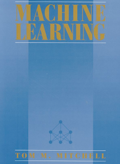

Machine learning – and Apache Mahout
Isabel Drost recently contributed some enhancements to the Guided Editor (to allow nested facts, very handy) – quite a clever patch.
As if that isn’t enough, she is also a contributor to the Apache Mahout project:
Mahout is: (in the projects own words): “Mahout’s goal is to build scalable, Apache licensed machine learning libraries.” The project site is here.
Interestingly one of my #1 books to read on the toilet at the moment is:

This book talks about (amongst many things) using machine learning to “learn” rules – the benefit of learning rules as opposed to some opaque representation is that a human has a fighting chance of understanding the rules, and improving the learning process. It would be interesting to one day see this stuff applied with projects like Mahout.
Anyway, here is Isabel’s writeup on the subject:
in business has increased tremendously during the last decade. One example of
such data are event logs generated in health care about the patient handling
process. Another example are event logs generated by standard workflow tools.
It is natural to ask whether it is possible to draw conclusions from these
logs, to generalize from what was observed, to learn common process rules
from this data [http://wwwkramer.in.tum.de/
In recent years a rather large community of researchers has treated the
problem of learning from example data. The goal of the new Apache project
Mahout [http://lucene.apache.org/
stable, scalable suite of machine learning tools. The framework is designed
for high throughput and will be capable of handling massive datasets both
during training and application – in case this distinction exists. Our focus
is on scalability and we intend to provide parallelized machine learning
algorithm implementations based on the Hadoop framework.
To date several basic algorithms and frameworks have been implemented and
integrated into Mahout: There are implementations for grouping data points
that are similar to each other (clustering). Based on a set of labeled
examples it is possible to learn a classifier that is able to assign new data
points to existing categories(classification). Mahout also integrated Taste,
a framework for learning which items to recommend to users given a log of
user interactions.
Currently the focus is mainly on recommendation mining and learning from
textual data, yet the community is open for new ideas and happily welcomes
contributions from people involved in other topics. So in case you are
interested in machine learning or want to know what one could do with your
data, just drop by on the dev or users mailing list and post your questions
and comments.

{kind=link}
{kind=link}